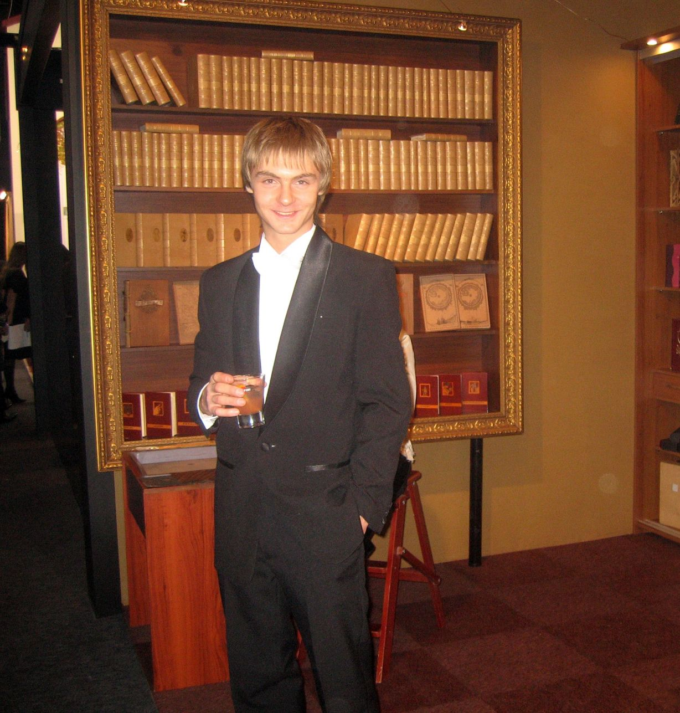
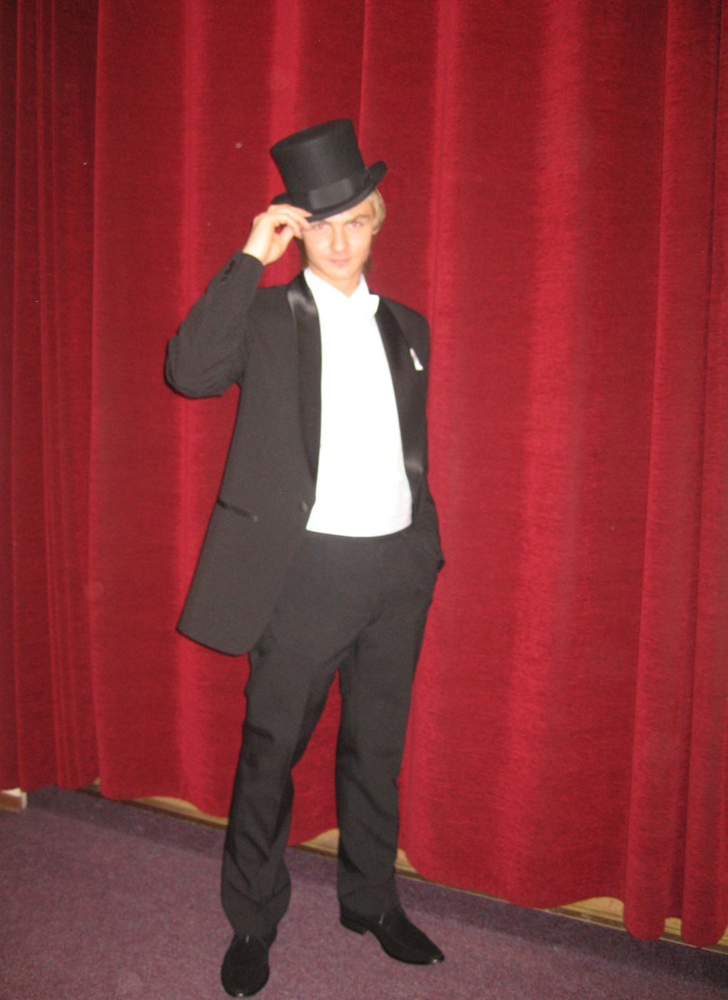
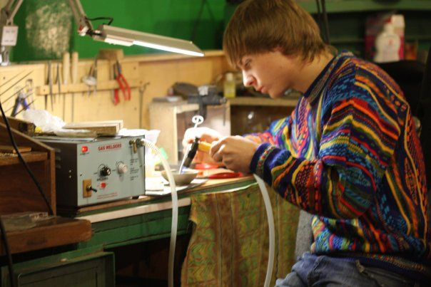
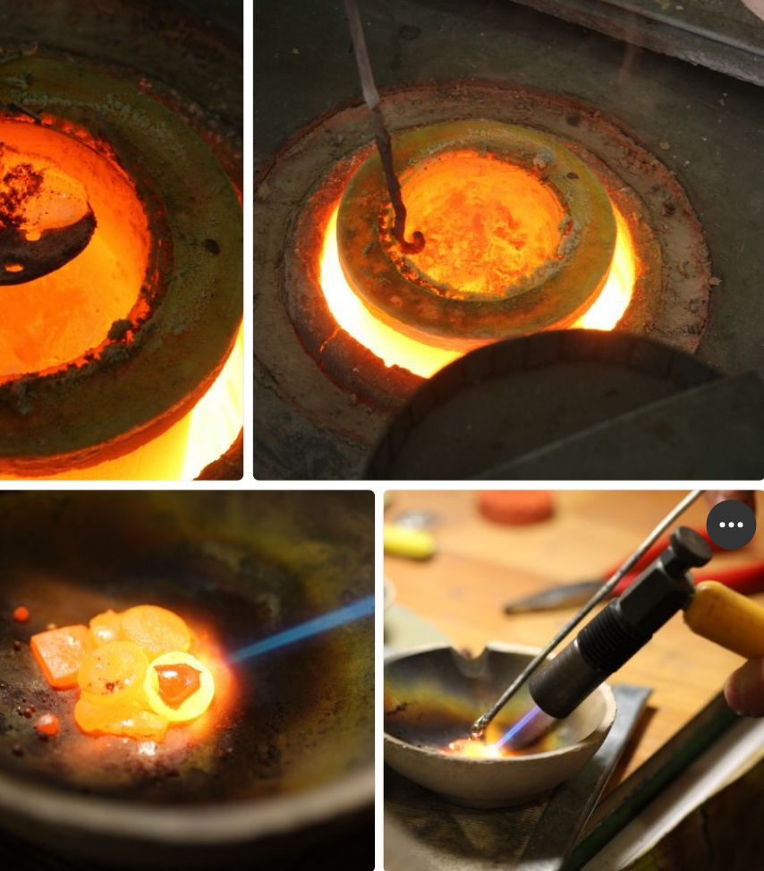
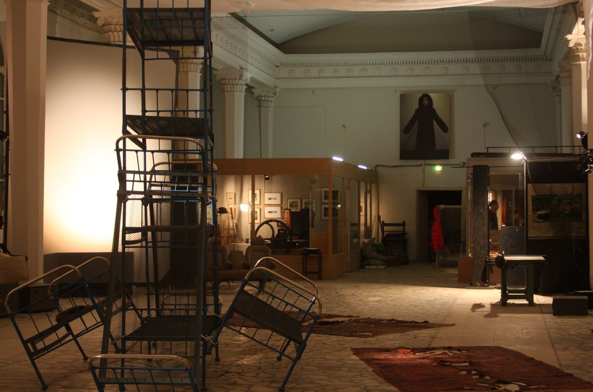
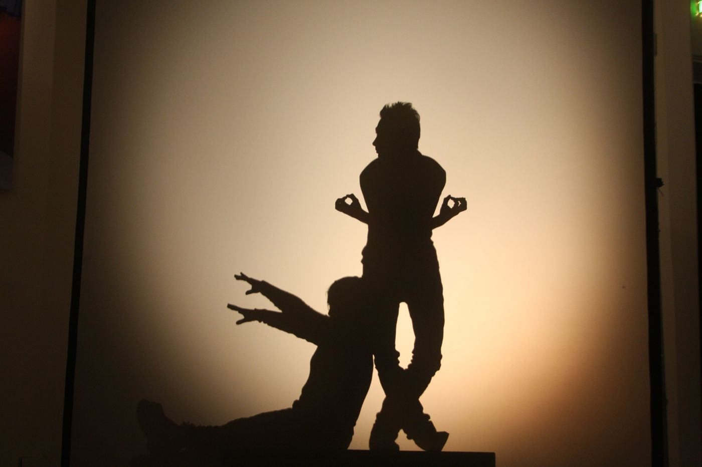

← Вернуться к резюме
Семейная мастерская «Раритет» - 7+ лет “правая рука” основателя
2007 - 2014
Сайт Школы РАРИТЕТ - https://papitet.ru/
Контекст
Работал в мастерской отца в режиме «всё на мне»: свободный график без фиксированного расписания, но фактически максимальная вовлечённость - часто задержки до ночи и ночёвки на месте, особенно в периоды срочных и крупных заказов.
Роль - помощник основателя и опора для всей операционки: производство руками, выставки, задачи “найти-купить-организовать”, плюс отдельный сильный контур - компьютеры и системный администратор.

Выставка в Крокусе

Моя роль и ответственность (по направлениям)
1) Производство и ремесло: «делал руками и закрывал горящие задачи»
- Тиснение по коже, работа со штампами, подготовка материалов под срочные заказы: резка, склейка, заготовки из картона/кожи/бумаги.
- Работа с разными материалами и техпроцессами: дерево, пластик (в т.ч. ПВХ), бумага, картон, металл; участие в изготовлении заготовок.
- Работа на оборудовании и станках (включая пилы/фрезеровку и др. операции в рамках мастерской).


2) ЧПУ-направление: от “помощника” до самостоятельного оператора/подготовщика
В какой-то момент закрыл позицию ЧПУ-оператора внутри команды: разобрался и начал вести направление самостоятельно.
- Подготовка штампов: отрисовка/подготовка макетов, запуск фрезеровки на магниевой пластине.
- Настройка процесса: запуск станка, контроль результата, обслуживание расходников.
- Инструмент: заточка/поддержание фрез в рабочем состоянии.
- 3D/формообразование: резка восковых моделей на ЧПУ под дальнейшее литьё (например, заготовки для бронзовых изделий через снятие формы и последующую отливку).
Что это показывает работодателю: быстрое освоение сложного оборудования, ответственность за технологический результат, внимательность к точности и качеству, понимание цепочки «цифровая подготовка → производство → финальный продукт».
3) Выставки и “полевые операции”: логистика, монтаж, упаковка
- Участие в выставках как ключевой помощник: привезти/отвезти, упаковать, собрать, разложить, смонтировать/демонтировать.
- Работа «в режиме мероприятия», где важны сроки, аккуратность, и готовность делать всё руками без “это не моя зона”.
4) IT и “системная опора”: компьютеры, софт, техподдержка
- Поддержание работоспособности всей компьютерной части: настройка, установка софта, решение проблем у менеджеров и сотрудников.
- По сути, роль “бизнес-ассистент + сисадмин”, который снимает с руководителя технологические и операционные боли.
5) Подрядчики и сайт: поиск, координация, контент, контроль качества
- Создавал/организовывал сайт: сначала делал сам, затем находил подрядчиков и курировал разработку.
- Готовил контент: тексты, подбор и обработка фотографий (Photoshop), сбор материалов.
- Нанимал/координировал специалистов (в т.ч. сисадминов и других подрядчиков), решал задачи “найти-договориться-сделать”.
Отдельный кейс: “Павильон искусства” на ВДНХ - годовой проект с высоким риском


В рамках работы был опыт участия в крупном офлайн-проекте:
- Аренда павильона на ВДНХ: площадь около 500 м², высокая фиксированная аренда.
- Запуск выставочного пространства, организация процессов на месте, монтаж/демонтаж, работа с посещаемостью и продажей билетов.
- Столкновение с рынком: продукт был “интересный, но сложный для массового понимания”, что ударило по конверсии.
- Кризисная стадия: кассовые разрывы, долги по аренде, необходимость срочно закрывать обязательства через кредиты.
Что это показывает работодателю: опыт реального предпринимательского риска, понимание экономики офлайна (аренда/трафик/конверсия), антикризисное поведение, выдержка в стрессовой ситуации, честные выводы из ошибки.
Мои ключевые навыки, которые сформировались за эти 7+ лет
Операционное лидерство и ответственность
- “Закрываю задачу целиком”: от идеи и поиска решения до реализации руками.
- Работа в режиме дедлайнов, срочных заказов и многозадачности.
- Надёжность: когда «некому», я становлюсь тем, кто делает.
Техническое мышление и быстрое обучение
- Освоение ЧПУ и ведение направления самостоятельно.
- Понимание технологической цепочки и качества результата.
- Умение разбираться в новых инструментах/оборудовании без долгого онбординга.
Цифровые навыки и системность
- Сис-админ, софт, настройка рабочих мест, устранение проблем.
- Управление подрядчиками: постановка задач, контроль, доведение до результата.
- Контент для сайта: тексты, визуал, базовая обработка фото.
Коммуникации и “чувство бизнеса”
- Пытался выстроить процессы и фокус на прибыльные направления.
- Понимание, как “упаковывать” продукт и как маркетинг связан с деньгами.
- Осознание границ: умею уходить из модели, где рост невозможен из-за собственника.
Как я сам формулирую этот опыт (короткая версия)
7+ лет в мастерской отца: правая рука основателя. Производство руками + ЧПУ (штампы/воск под литьё) + выставки и логистика + IT/техподдержка + подрядчики и сайт. Параллельно пытался выстроить систему и усилить маркетинг, но из-за разных взглядов с собственником ушёл строить карьеру в онлайн-среде.
Данное видео было спродюсировано, отснято и озвучено мною. Оно наглядно показывает "Что такое Школа Раритет" на примере истории одного заказа.
https://youtu.be/HiTQZSwPS-s
← Вернуться к резюме